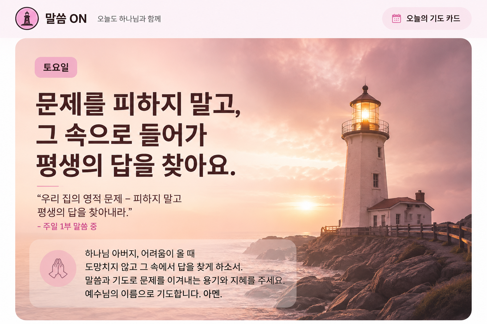
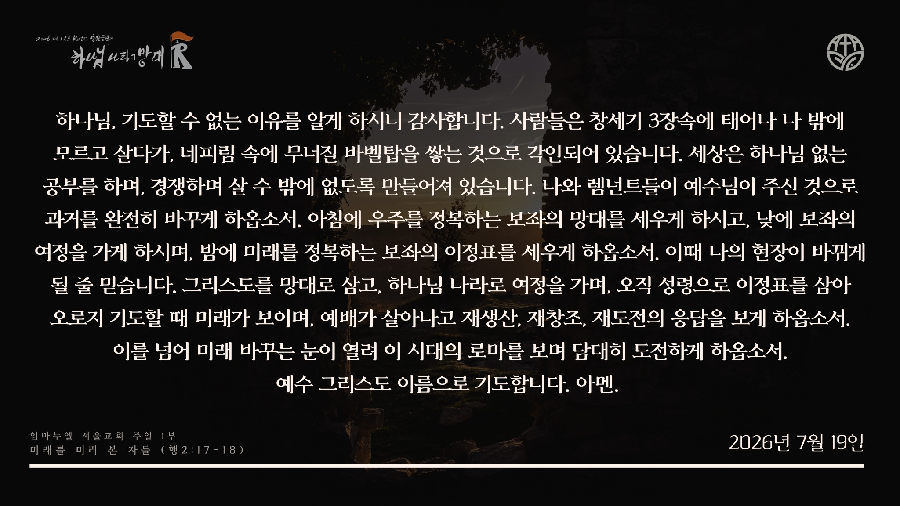

미래를 미리 본 자들
문제를 피하려고만 하지 말고, 그 속으로 들어가 하나님이 주시는 평생의 답을 찾아요.


원본 카드의 작은 글씨가 필요할 때만 펼쳐 볼 수 있도록 접어 두었습니다.
지금 마음과 가까운 항목을 하나 선택해 보세요. 새로운 답을 뽑는 것이 아니라, 이번 주 말씀을 다시 기억하며 기도합니다.
이 기도문은 이번 주 강단 말씀을 기억하도록 돕는 짧은 안내입니다. 그대로 읽어도 좋고, 나의 말로 바꾸어 기도해도 좋습니다.
대예배와 중·고등국 강단 메시지를 보고, 아래에서 주간 말씀 요약 PDF까지 한 줄로 확인할 수 있습니다.
한 칸에 오늘 마음에 남은 말씀과 나의 기도를 자유롭게 적어 보세요. 저장하면 다음에 같은 기기로 다시 접속했을 때 페이지 가장 위에서 먼저 만날 수 있습니다.
현재는 이 휴대폰·컴퓨터의 브라우저에 저장됩니다. 다른 기기에서도 이어 보려면 추후 개인 로그인을 연결해야 합니다.
지금 마음이나 기도제목을 짧게 적어 보세요. 이름, 학교명, 친구 실명과 연락처는 적지 마세요.
최근 등록된 익명 기도제목입니다. 누군가 기도하면 모든 이용자에게 카드의 빛이 함께 켜집니다.